03系统服务篇
Linux高级命令之find
文件搜索/查找
文件搜索是我们日常中很频繁的操作，windows下的文件搜索。
比如everythings软件，搜索整个系统中，所有的文件，文件夹。
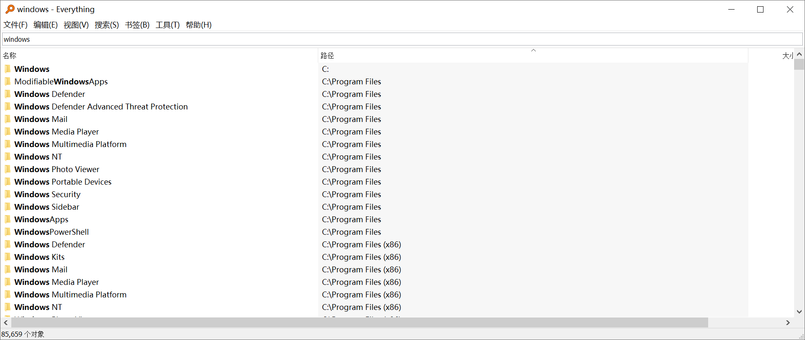
Linux文件查找find命令
前面我已经学了find命令，能够根据文件名字、文件类型，以及限定搜索的路径，以此搜索文件、文件夹，其实find还支持更多的参数、更复杂的语法，对于搜索的条件更加精确。
基本语法
# find 搜索路径 [选项 选项的值] ...
选项说明：
-name ：根据文件的名称搜索文件，支持*通配符
-type ：f代表普通文件、d代表文件夹
找到机器上所有的log文件。
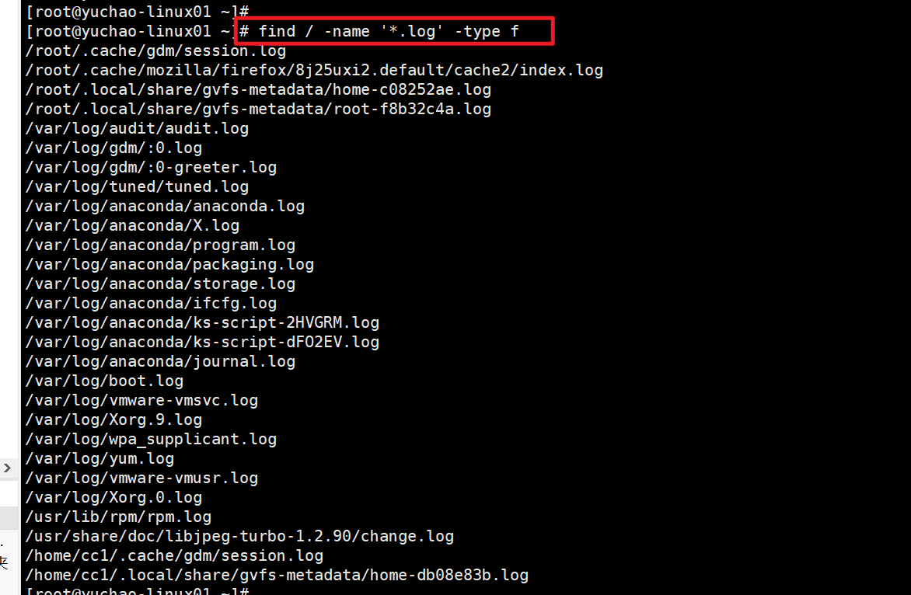
*星号通配符
在Linux操作系统中，我们想要查找的文件名称不是特别清晰（只记住了前面或后面的字符），这个时候就可以使用*星号通配符了。
搜索/etc目录下，所有的txt文件。
[root@yuchao-linux01 ~]#
[root@yuchao-linux01 ~]# find /etc -name '*.txt'
/etc/pki/nssdb/pkcs11.txt
/etc/brltty/brl-lb-all.txt
/etc/brltty/brl-lt-all.txt
/etc/brltty/brl-mb-all.txt
/etc/brltty/brl-md-all.txt
/etc/brltty/brl-mn-all.txt
/etc/brltty/brl-ba-all.txt
/etc/brltty/brl-bd-all.txt
/etc/brltty/brl-bl-18.txt
/etc/brltty/brl-bl-40_m20_m40.txt
/etc/brltty/brl-ec-all.txt
/etc/brltty/brl-ec-spanish.txt
/etc/brltty/brl-eu-all.txt
/etc/brltty/brl-tn-all.txt
/etc/brltty/brl-ts-nav20_nav40.txt
/etc/brltty/brl-ts-nav80.txt
/etc/brltty/brl-ts-pb40.txt
/etc/brltty/brl-ts-pb65_pb81.txt
/etc/brltty/brl-tt-all.txt
/etc/brltty/brl-vd-all.txt
/etc/brltty/brl-vr-all.txt
/etc/brltty/brl-vs-all.txt
/etc/brltty/brl-xw-all.txt
/etc/yu3.txt
搜索系统中 所有以hello开头的文件
[root@yuchao-linux01 ~]# find / -name "hello*" -type f
/boot/grub2/i386-pc/hello.mod
/sys/devices/virtual/net/virbr0/bridge/hello_timer
/sys/devices/virtual/net/virbr0/bridge/hello_time
/usr/lib/grub/i386-pc/hello.mod
/usr/share/doc/python-ply-3.4/example/BASIC/hello.bas
/usr/share/systemtap/examples/general/helloworld.meta
/usr/share/systemtap/examples/general/helloworld.stp
/home/yuchao01/hello.sh
根据文件修改时间搜索
为什么要学习关于文件属性，因为我们的文件，不要只认为，内容没变，你的文件就没人碰过。
- 有人偷看了你的密码文件？
- 有人偷偷修改了你的重要文件，你肉眼也无法直接观察？
- 有人偷偷修改了你的文件属性，你却还不知道？
黑客总是会悄无声息的潜入你的服务器，盗取你的资料，因此你得掌握，如何判断，是否有人登录过你的服务器，访问过你的服务器资料。
这个坏人可以是黑客，也可能是你的同事~~~
关于文件的属性，有如下三个时间，可以更清晰的了解你的文件是否被人碰过。
创建时间：代表这个文件什么时间被创建
访问时间：代表这个文件什么时间被访问
修改时间：代表这个文件什么时间被修改
stat命令获取文件详细属性
关于access时间
Access 指最后一次读取的时间，当“该文件的内容被取用”时，就会更新这个读取时间，比如cat、more、less、grep。
举例来说，我们使用cat去读取一个文件时，就会更新该文件的Access time。
1.我们创建一个文件夹
初始化的文件三个时间属性，是相同的，记录的都是文件的创建时间。
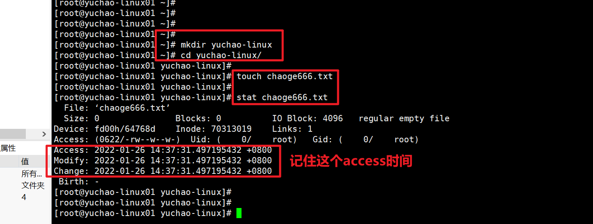
2.用cat命令，看看文件内容（访问文件）
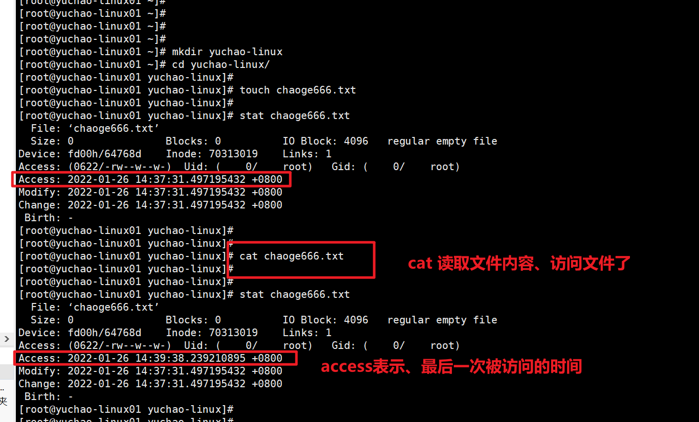
关于change时间
change表示
Change 指最后一次修改元数据的时间 ，当该文件的“状态”改变时，就会更新这个时间。
也就是说，当文件的权限与属性被更改时，就会更新这个时间。
比如当你使用chmod、chown、mv命令修改了文件的属性。
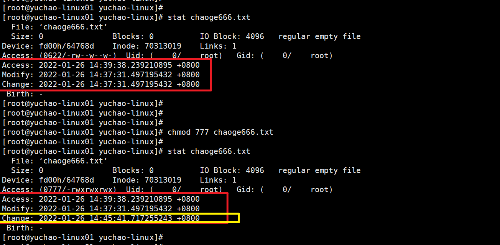
可以看到，文件属性变化，只有change时间变了。
关于modify属性
modify意思是修改、更改、写入。ls -l 看到的默认是最近一次被modify的时间。
Modify 指最后一次修改数据的时间，当该文件的“内容数据”更改时，就会更新这个时间。
内容数据指的是文件的内容，而不是文件的属性或权限。
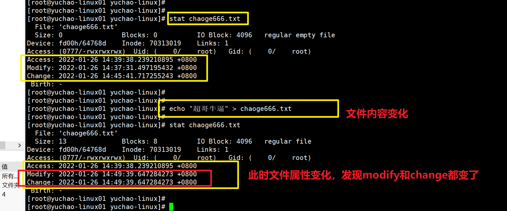
因此，当你修改modify属性，也就是修改文件内容、change时间是必须跟着改变的，因此都是属于文件属性。
超哥总结
- atime可以独立修改，如文件访问时间
- ctime也可以独立修改，如仅修改文件权限
- mtime会影响到atime和ctime。
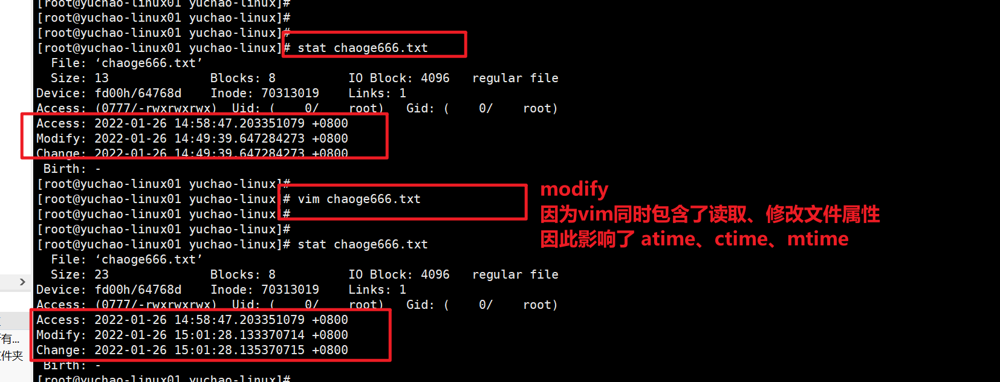
touch修改文件时间
touch不仅是创建普通文件，其实本意是修改文件时间。
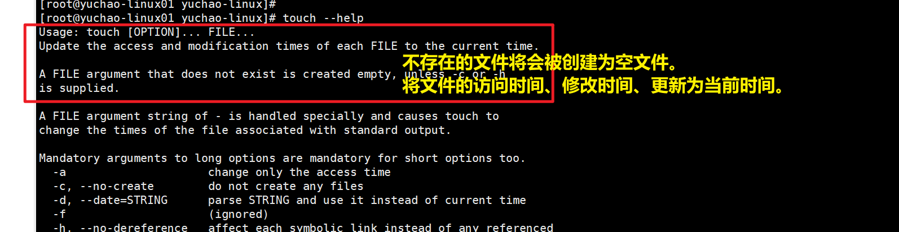
意思是touch有两个作用
- 文件不存在、自动创建该文件，设置为当前系统时间。
- 文件存在，修改文件时间为当前系统时间。
文件不存在
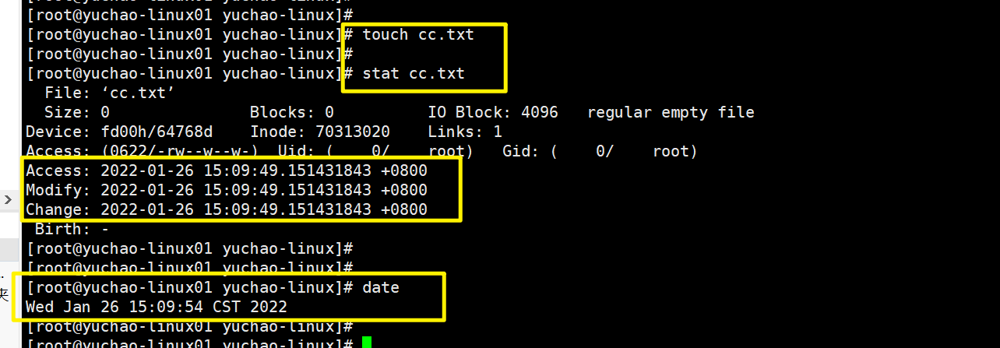
文件存在
修改文件时间
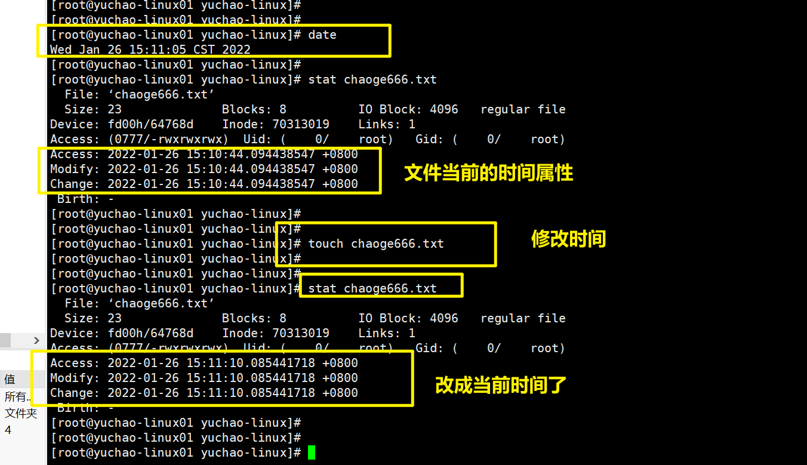
并且我们发现，touch默认修改了文件的所有时间属性。
只修改modify时间
modify是写入数据的意思，touch可以模拟该作用。
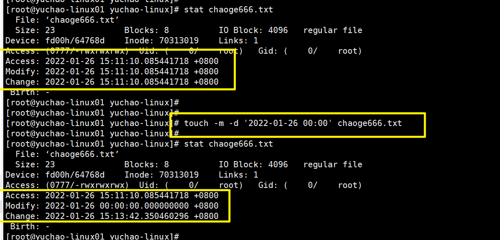
[root@yuchao-linux01 yuchao-linux]# touch -m -d '2022-01-26 00:00' chaoge666.txt
由于modify时间会影响到 change time，因此系统将ctime，改为了当前系统时间。
只修改access时间
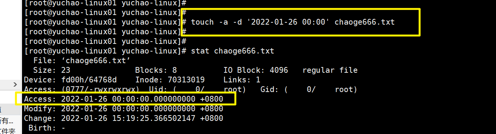
[root@yuchao-linux01 yuchao-linux]# touch -a -d '2022-01-26 00:00' chaoge666.txt
find根据文件访问时间搜索（重点，难点）
可以说，市面上的资料，讲的都是错的，看看于超老师的真理吧。
如何知道你的系统上，哪些文件被访问过？哪些文件被篡改过？
find可以帮你。
比如你想知道24小时内，有哪些文件被修改过，可以判断出系统文件安全性
根据modify时间查找（重要）
什么是今天、昨天
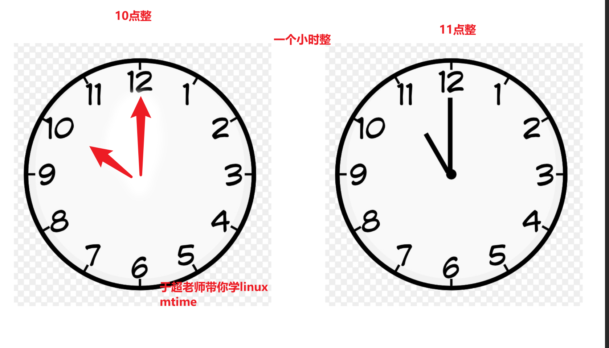
时间的整点是24小时制，算为一整天。
2022-01-25 00:00:00 ~ 2022-01-26 00:00:00
我们根据时间计算，也就是以24小时制来算。
find语法
# find 搜索路径 -mtime +数字/数字/-数字
-mtime ： 根据文件的最后修改时间搜索文件
关于时间的推算，有三个符号 + - 0
官方解释
find $HOME -mtime 0
Search for files in your home directory which have been modified in the last twenty-four hours. This command works this way because the time since each
file was last modified is divided by 24 hours and any remainder is discarded. That means that to match -mtime 0, a file will have to have a modification
in the past which is less than 24 hours ago.
为0时，表示在过去24小时内被修改过的文件
文件最后修改时间要除以24，余数将被丢弃，这就表示，要符合 -mtime 0 ，文件必须是小于24小时的修改。
今天24小时内被篡改的文件（0）
1.设置好时间闭环，搭建演练环境
1.确认当前系统时间
2.设置一个文件的modify时间，设置在24小时内。
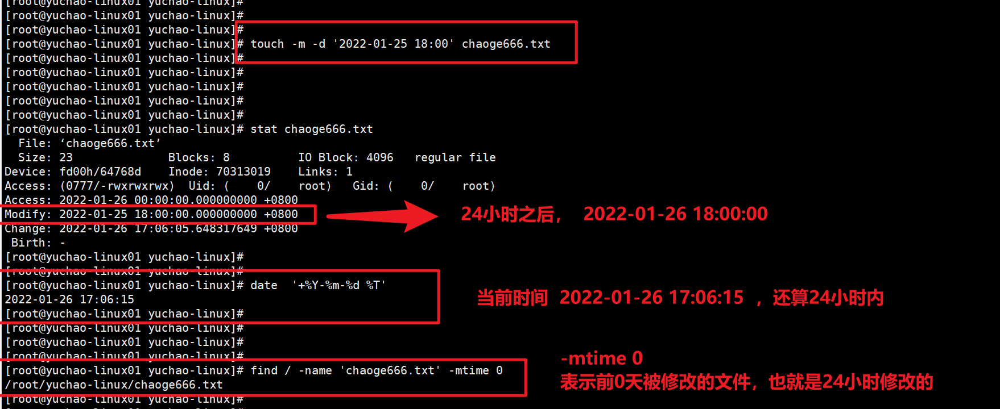
昨天被修改的文件（0）
正巧超过24小时被修改的时间，也就是昨天被修改的文件。
时间向前推算超过24小时。
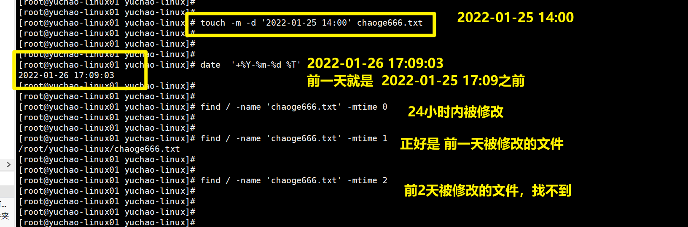
前天被修改的文件（0）
前天，往前推48小时。
今天是2022-01-26，我要找出24号那天，被修改的文件，当然你可能要注意当前的时间，以24小时计算。
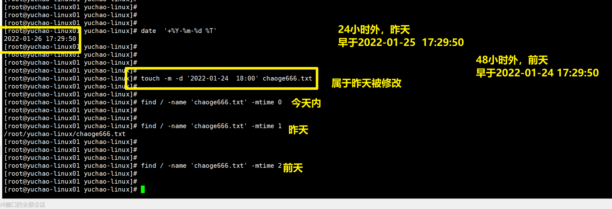
如何设置为前天被修改。
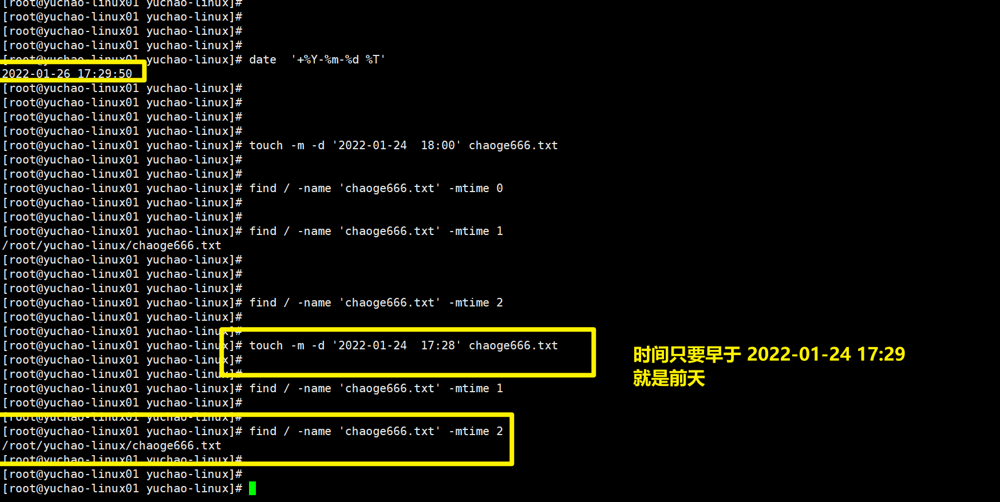
小结
正好是当天被修改的文件，正好是24小时内被修改的文件
find /root/yuchao-linux/ -name '*.txt' -mtime 0
正好是昨天，被修改的文件，也就是超过24小时，小于48小时内的
find /root/yuchao-linux/ -name '*.txt' -mtime 1
24/48小时外被修改的文件（+）
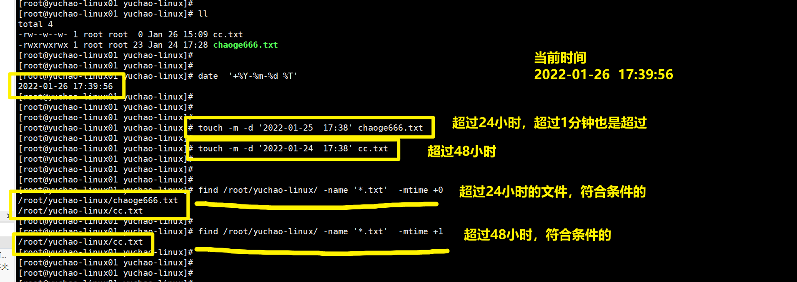
小结
超过一天被篡改的文件，超过24小时被修改的都符合
find /root/yuchao-linux/ -name '*.txt' -mtime +0
超过2天被篡改的文件，超过48小时被修改的都符合
find /root/yuchao-linux/ -name '*.txt' -mtime +1
某天以内被篡改的文件（-）
减号
1.准备好用于测试时间的文件。
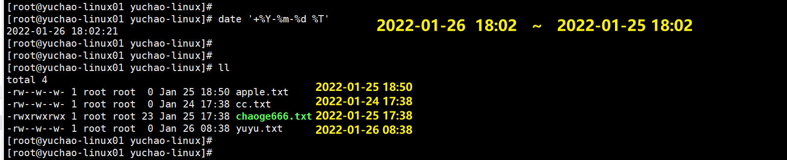
2.找文件
被修改时间在一天内的文件
apple.txt
yuyu.txt
[root@yuchao-linux01 yuchao-linux]# find /root/yuchao-linux/ -name '*.txt' -mtime -1
/root/yuchao-linux/yuyu.txt
/root/yuchao-linux/apple.txt
被修改时间在2天内的文件
apple.txt
yuyu.txt
小于2022-01-24 18:02即可
chaoge666.txt
[root@yuchao-linux01 yuchao-linux]# find /root/yuchao-linux/ -name '*.txt' -mtime -2
/root/yuchao-linux/chaoge666.txt
/root/yuchao-linux/yuyu.txt
/root/yuchao-linux/apple.txt
find根据时间找文件总结
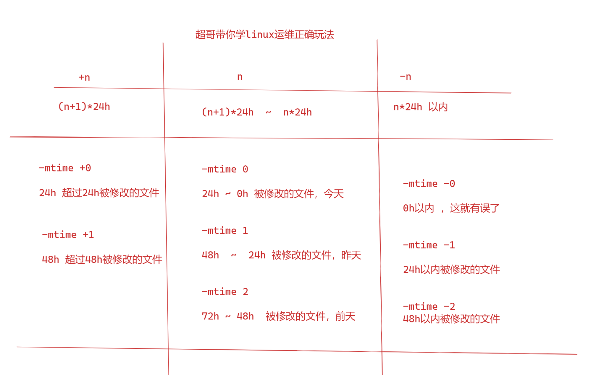
exec扩展选项
你有一个需求，找出所有的txt文件，并且你还想给它删除，怎么办？
-exec
用于find命令找出来匹配的文件后，再交给其他的linux命令加工。
实战
1.删除系统中超过10天的日志
1.我们前面学过，两条命令的二次加工，得借助xargs进行参数构造,以及管道符可以二次加工
[root@yuchao-linux01 tmp]# find /tmp/ -name '*.txt' | xargs -i rm -f {}
2.find命令，提供了-exec选项，完成一样的效果。
-exec 跟着shell命令，结尾必须以;分号结束，考虑系统差异，加上转义符\;
{}作用是替代find查阅到的结果
{}前后得有空格
答案
[root@yuchao-linux01 tmp]#
[root@yuchao-linux01 tmp]# find /var/log/ -name '*.log' -mtime +10 -exec rm -f {} \;
ok扩展选项
-ok比-exec更安全，存在用户提示确认
刚才用exec删除文件，但是没有了提示功能，加上ok更为可靠。
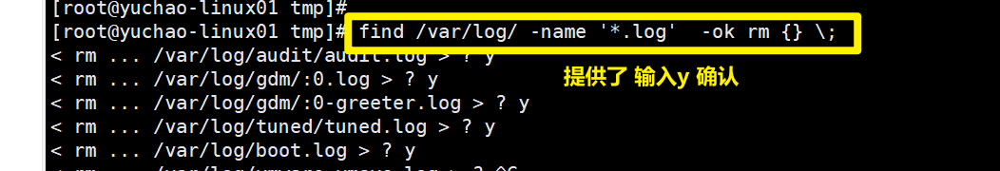
根据文件大小搜索-size
一般用于找出系统上的大文件，如果没用可以删除，做磁盘清理。
语法
# find 搜索路径 -size [文件大小，常用单位：k，M，G]
size值 : 搜索等于size值大小的文件
-size值 : [0, size值)
+size值 : (size值,正无穷大)
案例
搜索15M大小的文件
[root@yuchao-linux01 tmp]# find /usr -type f -size 15M |xargs du -h
15M /usr/lib/jvm/java-1.8.0-openjdk-1.8.0.161-2.b14.el7.x86_64/jre/lib/amd64/server/libjvm.so
15M /usr/libexec/gcc/x86_64-redhat-linux/4.8.2/f951
15M /usr/libexec/gcc/x86_64-redhat-linux/4.8.2/cc1plus
搜索小于15M的文件
[root@yuchao-linux01 tmp]# find /usr -type f -size -15M |xargs du -h
搜索大于100M的文件
[root@yuchao-linux01 tmp]# find /usr -type f -size +100M |xargs du -h
102M /usr/lib/locale/locale-archive
[root@yuchao-linux01 tmp]#
dd命令
Linux dd 命令用于读取、转换并输出数据。
dd 可从标准输入或文件中读取数据，根据指定的格式来转换数据，再输出到文件、设备或标准输出。
# dd if=/dev/zero of=文件名称 bs=1M count=1
选项说明：
if代表输入文件
of代表输出文件
bs代表字节为单位的块大小。
count代表被复制的块。
/dev/zero，是一个输入设备，你可你用它来初始化文件。该设备无穷尽地提供0，可以使用任何你需要的数目。
他可以用于向设备或文件写入字符串0。
主要功能：在Linux操作系统中，生成某个大小的测试文件！
案例：使用dd创建一个1M大小的sun.txt文件，
[root@yuchao-linux01 tmp]# dd if=/dev/zero of=chaoge.txt bs=1M count=1
1+0 records in
1+0 records out
1048576 bytes (1.0 MB) copied, 0.00137936 s, 760 MB/s
[root@yuchao-linux01 tmp]#
[root@yuchao-linux01 tmp]#
[root@yuchao-linux01 tmp]# ll -h
total 1.0M
-rw--w--w- 1 root root 1.0M Jan 26 20:39 chaoge.txt
使用dd创建一个200M文件
[root@yuchao-linux01 tmp]#
[root@yuchao-linux01 tmp]# dd if=/dev/zero of=chaoge.txt bs=2M count=100
100+0 records in
100+0 records out
209715200 bytes (210 MB) copied, 0.488965 s, 429 MB/s
[root@yuchao-linux01 tmp]#
[root@yuchao-linux01 tmp]# ll -h
total 200M
-rw--w--w- 1 root root 200M Jan 26 20:39 chaoge.txt
tree
tree命令可以更友好的显示文件信息，以树状形式列出文件列表。
tree命令可能要单独安装：
yum install tree -y
常用参数
tree常用参数
-C 在文件和目录清单加上色彩，便于区分各种类型。
-d 显示目录名称而非内容。
-D 列出文件或目录的更改时间。
-f 在每个文件或目录之前，显示完整的相对路径名称。
-F 在条目后加上文件类型的指示符号(* ， /， = ， @ ， | ，其中的一个) 目录/
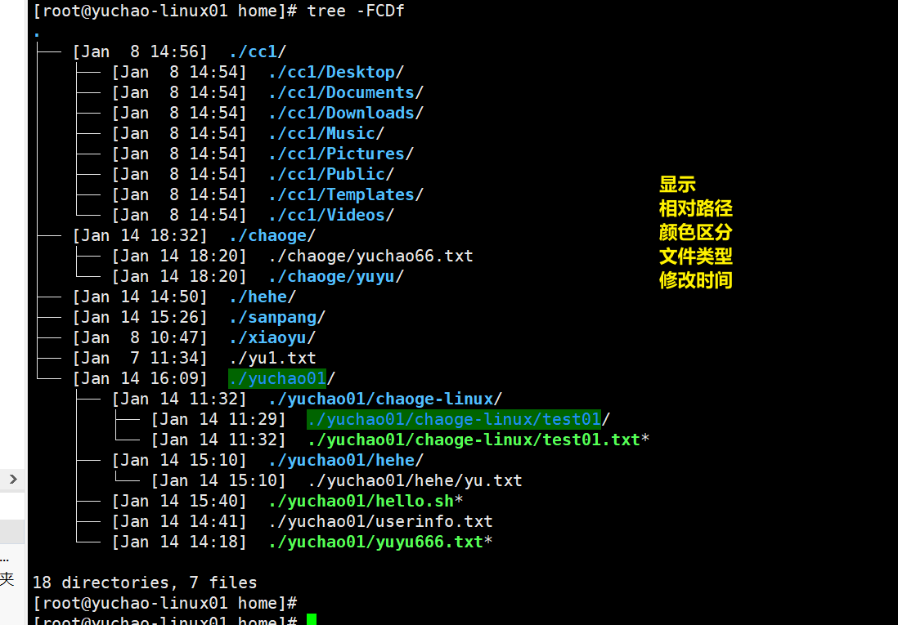
scp命令
Linux scp命令用于Linux之间复制文件和目录。
scp是 secure copy的缩写, scp是linux系统下基于ssh登陆进行安全的远程文件拷贝命令。
练习scp命令，需要准备2个linux系统，克隆一份即可。
关于克隆后的网络修改
因为是克隆机器，配置完全一样，我们要先修改网卡的MAC地址。
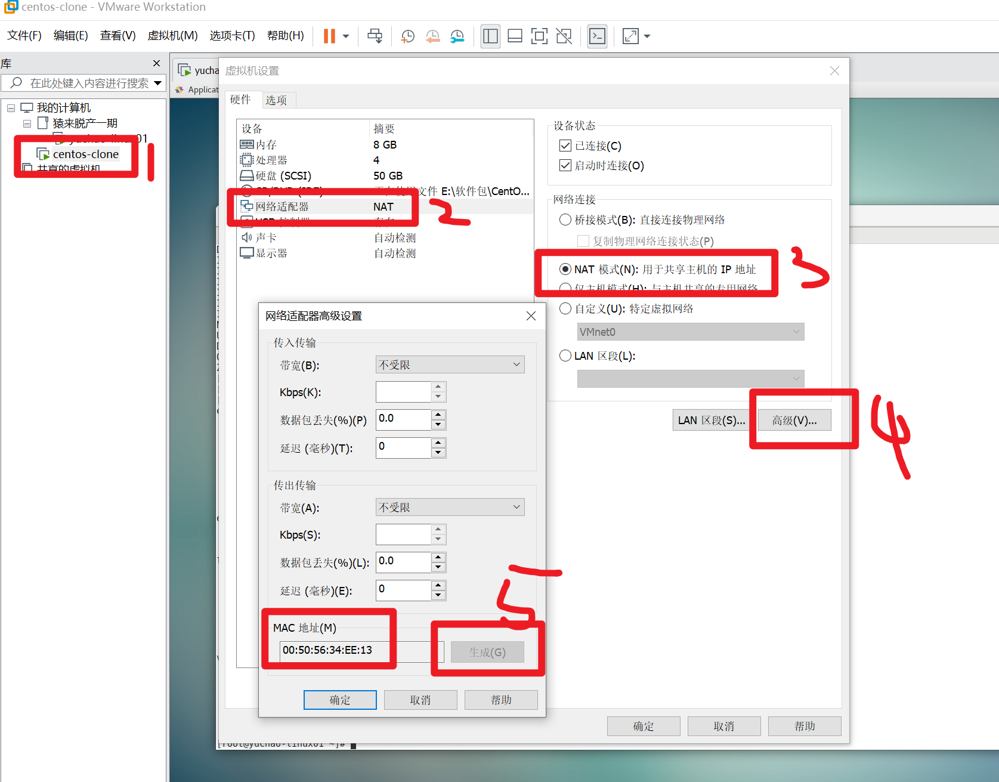
修改网络配置文件，主机名
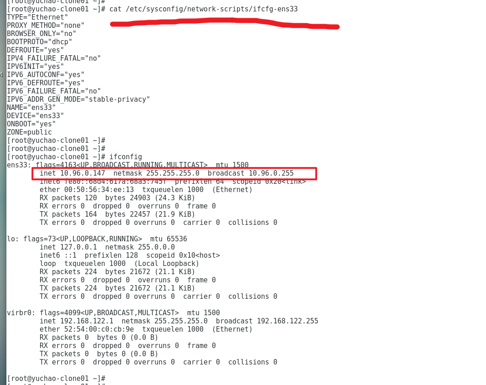
什么是scp
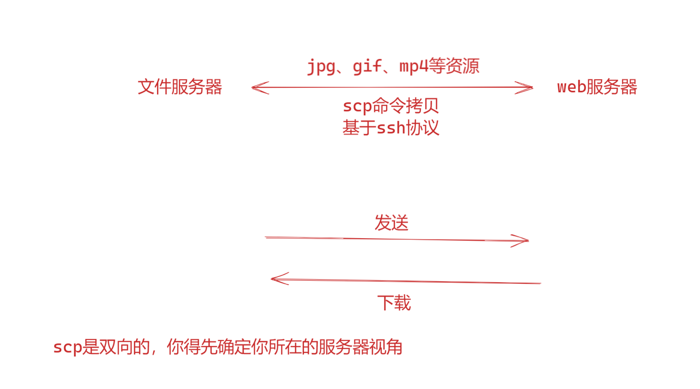
下载文件或者目录
语法
scp 你要的数据 数据放到那
scp 选项 用户名@linux主机地址:资源路径 linux本地文件路径
-r 递归拷贝文件夹
准备了2台机器
10.96.0.146 yuchao-linux01
10.96.0.147 yuchao-clone01
1.在文件服务器准备一个文件
[root@yuchao-clone01 opt]# dd if=/dev/zero of=chaoge.txt bs=2M count=10
2.下载该文件，基于scp
[root@yuchao-linux01 tmp]# scp root@10.96.0.147:/opt/chaoge.txt /tmp/
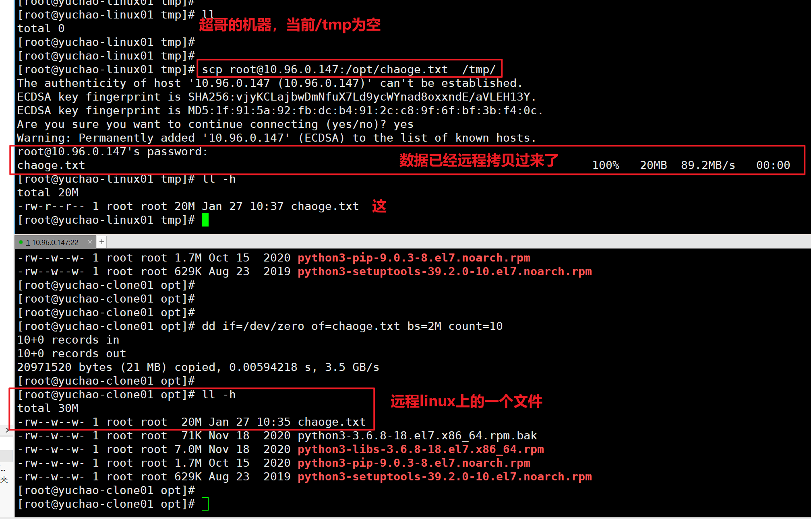
下载文件夹
[root@yuchao-linux01 tmp]# scp -r root@10.96.0.147:/opt/linux/ .
root@10.96.0.147's password:
cc.txt 100% 0 0.0KB/s 00:00
[root@yuchao-linux01 tmp]#
[root@yuchao-linux01 tmp]# tree
.
├── chaoge.txt
└── linux
└── yuchao
└── cc.txt
2 directories, 2 files
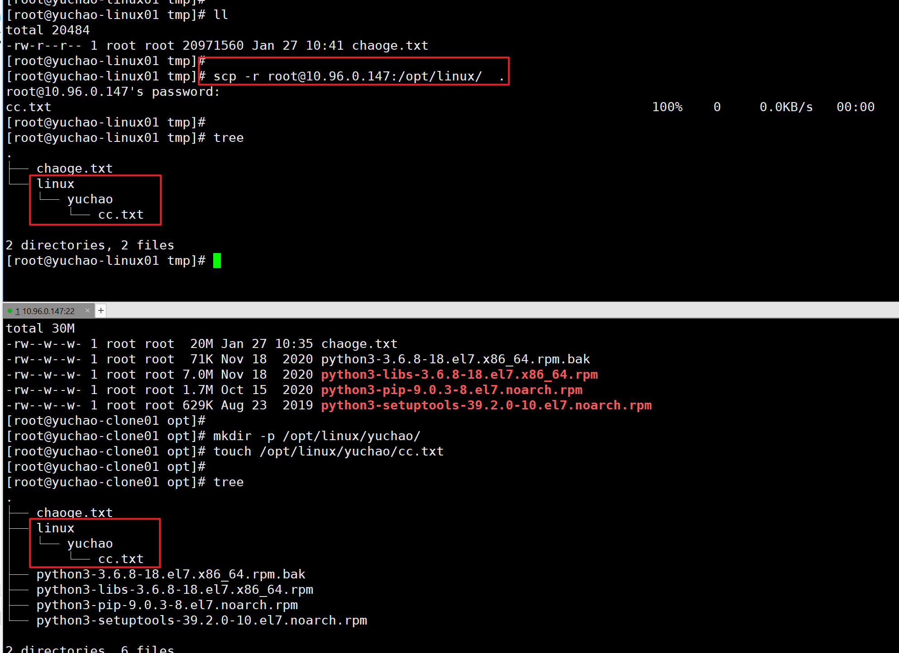
上传文件、目录
scp 你要的数据 传输到哪
scp linux本地文件路径 远程linux文件路径
把本地文件、文件夹，发到文件服务器上。
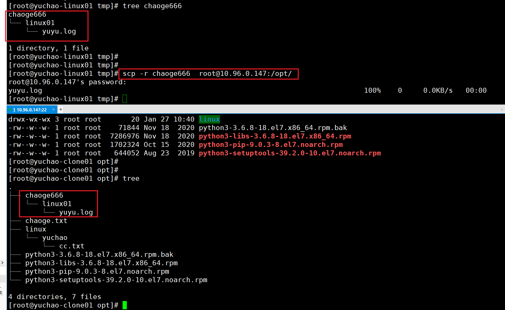
定时任务+tar+date完成文件备份
crontab回顾
crontab -l 查看
crontab -e 编辑
语法
* * * * * 命令绝对路径
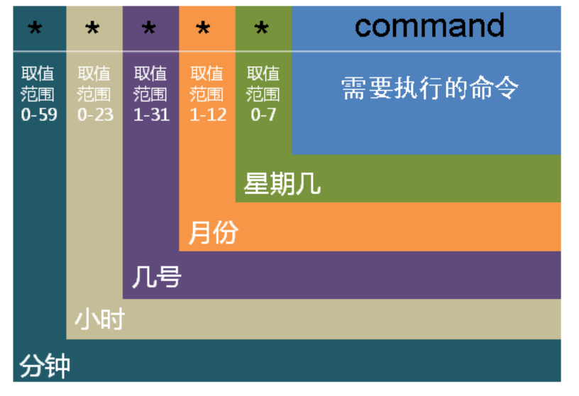
分、时、日、月、周（0和7表示周日） 命令必须是绝对路径
备份
案例：每天的凌晨2点0分把/etc目录备份一次/tmp目录下，要求把/etc打包成etc.tar.gz格式
[root@yuchao-linux01 tmp]# crontab -l
* * * * * /usr/bin/echo '超哥666' >> /tmp/chaoge.txt
0 2 * * * /usr/bin/tar -zcf /tmp/etc.tar.gz /etc
但是你看下这条命令，它的结果是固定死的，每次都会覆盖原文件。
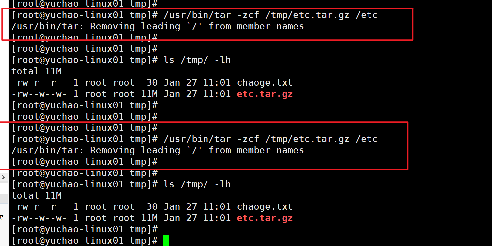
date命令
获取计算机当前的时间，以此时间对文件命名，是不是一个不错的方案？
语法
# date +"%F%T"
选项说明：
%F : 年月日
%T : 小时:分钟:秒
%Y : 年
%m : 月
%d : 日
%H : 小时
%M : 分钟
%S : 秒
案例
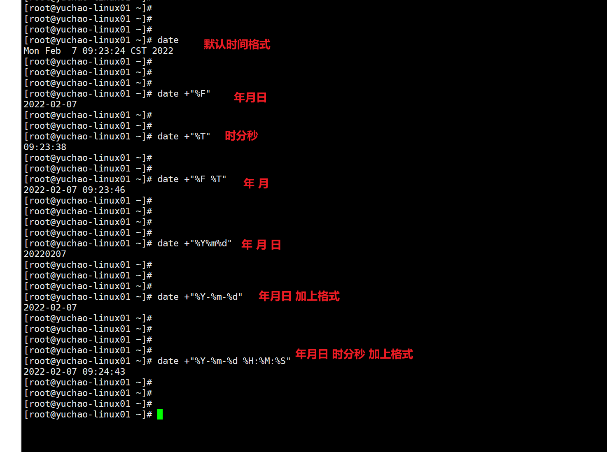
date结合crontab
1.获取命令的结果，拿到date命令的结果
$(命令) 这个语法，表示拿到命令的执行结果
2.取得时间，不要直接执行，直接执行拿到一串时间字符串，linux不认识这个
$(date +"%F %T")
3.可以尝试结合touch命令用用看，给文件名加上时间
touch "hello-$(date +'%F_%T').txt"
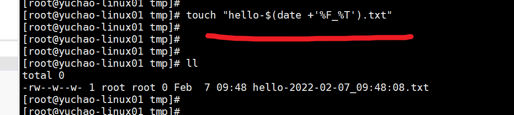
结合tar命令
bash中，单引号，双引号是有作用区别的，学shell时，超哥再讲。
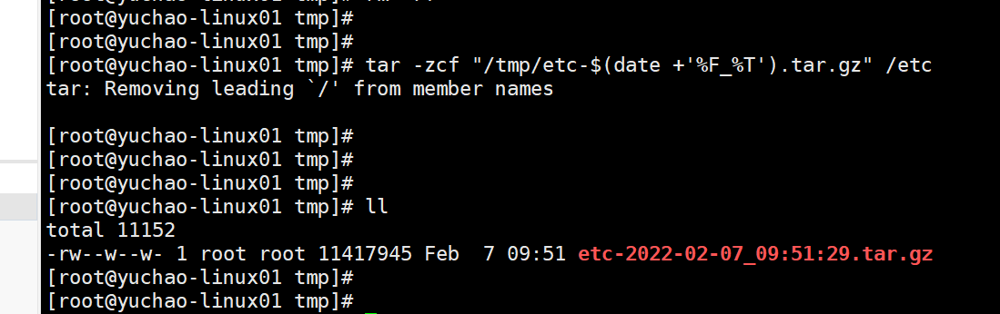
[root@yuchao-linux01 tmp]# tar -zcf "/tmp/etc-$(date +'%F_%T').tar.gz" /etc
命令可以用了，交给crontab即可。
0 2 * * * /bin/tar -zcf "/tmp/etc-$(date +'%F_%T').tar.gz" /etc